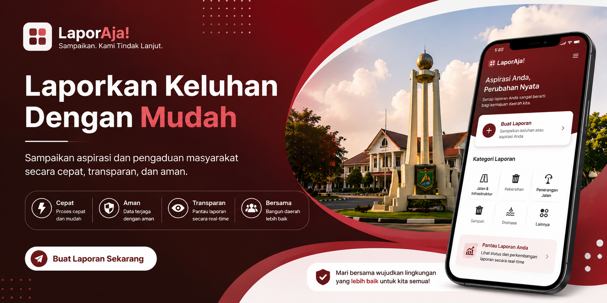
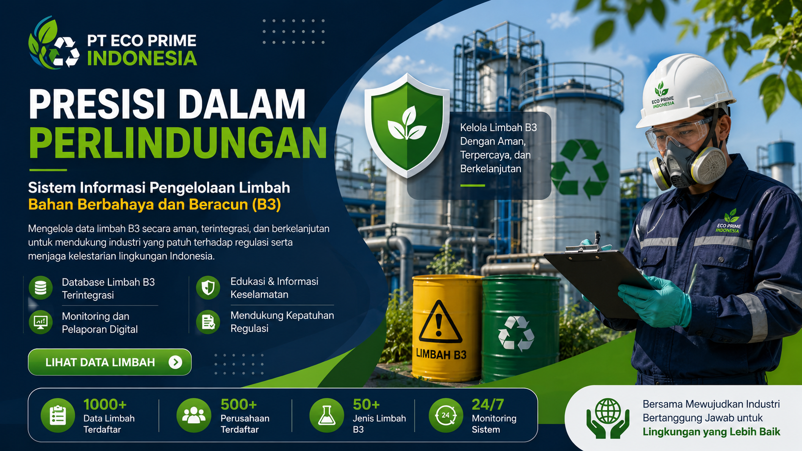
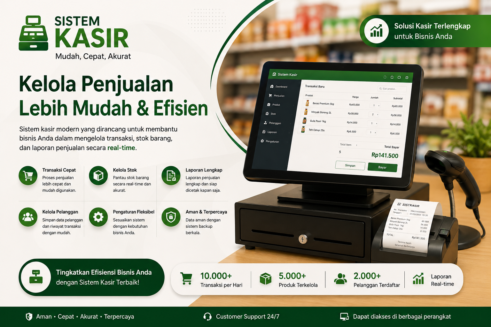
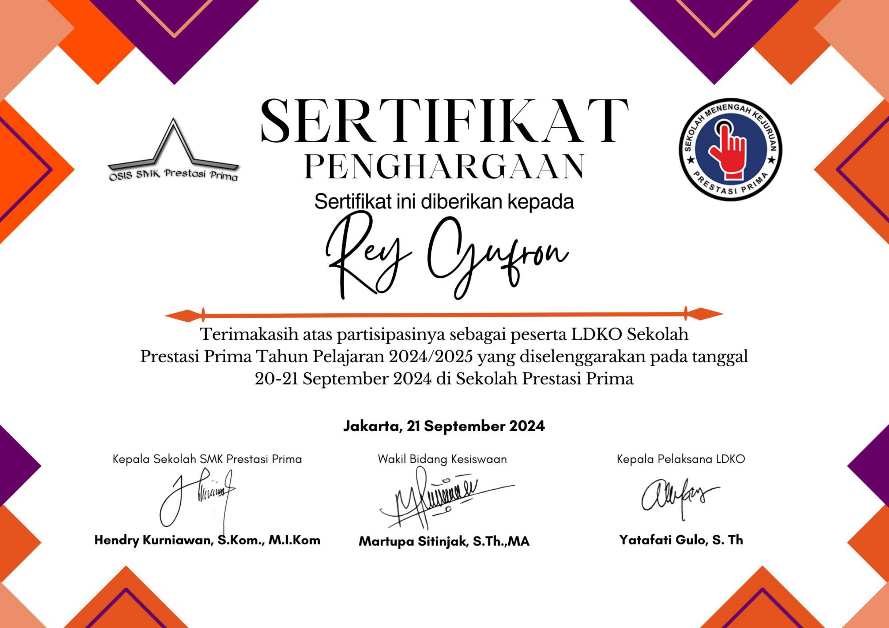
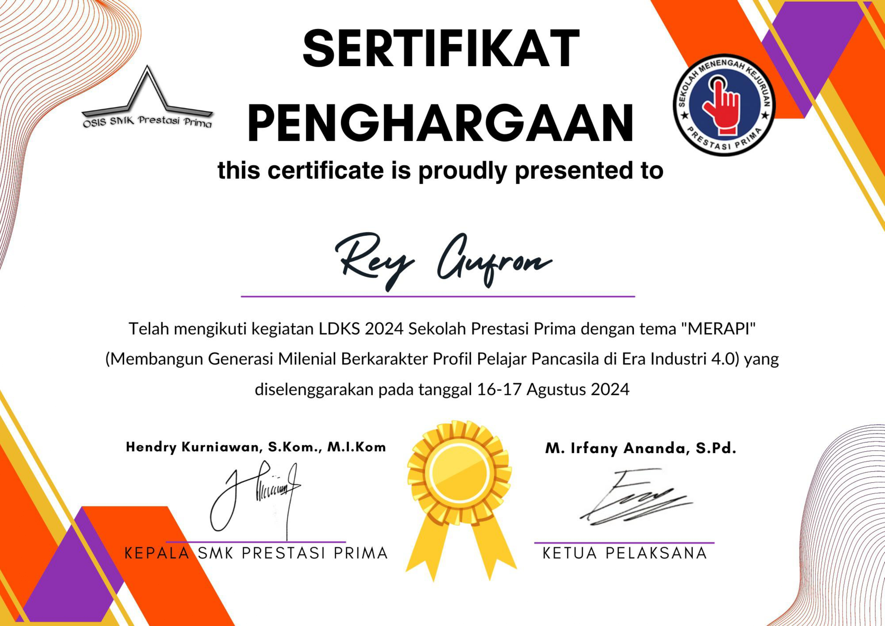
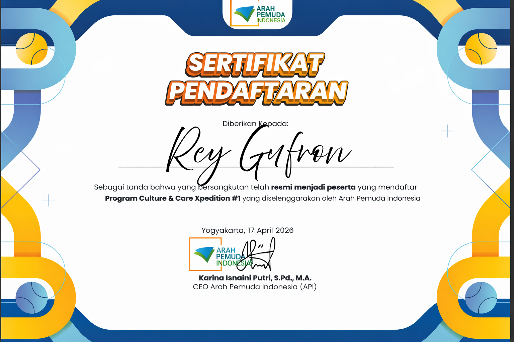

Web Developer
Halo, saya
Rey Gufron
Mempelajari dan mengembangkan kemampuan di bidang Web Development dan UI/UX Design dengan fokus pada pembuatan website yang modern, sederhana, dan mudah digunakan.

SCROLL
Mempelajari dan mengembangkan kemampuan di bidang Web Development dan UI/UX Design dengan fokus pada pembuatan website yang modern, sederhana, dan mudah digunakan.
Saya adalah seorang web developer dan UI designer dengan passion dalam menciptakan pengalaman digital yang menarik dan fungsional. Saya selalu bersemangat untuk belajar teknologi baru dan meningkatkan keterampilan saya.
Menjadi Full Stack Developer yang handal dan berkontribusi dalam proyek-proyek yang berdampak positif bagi masyarakat. Saya ingin terus berkembang dalam bidang web development dan UI/UX design.
Teknologi dan tools yang saya kuasai untuk mengembangkan solusi digital

Sistem Informasi Pengaduan dan Aspirasi Masyarakat berbasis web yang memudahkan warga menyampaikan laporan kepada instansi pemerintah secara digital.

Website Pengelolaan Limbah B3 dengan sistem pencatatan, pelaporan, dan monitoring limbah berbahaya untuk mendukung kepatuhan lingkungan perusahaan.

Aplikasi manajemen toko berbasis web untuk UMKM dengan fitur pencatatan produk, transaksi penjualan, laporan keuangan harian, dan manajemen stok barang.
Klik pada sertifikat untuk melihat lebih detail

Pelatihan
Pelatihan
SeminarMengembangkan aplikasi Sistem Pengaduan Masyarakat berbasis web menggunakan Laravel sebagai bagian dari pembelajaran Rekayasa Perangkat Lunak. Bertanggung jawab dalam perancangan UI/UX menggunakan Figma, pembuatan landing page dan dashboard admin, pengelolaan database, serta pengembangan fitur untuk proses pengaduan dan manajemen data.
Mengikuti program Latihan Dasar Kepemimpinan Organisasi (LDKO) untuk mengembangkan kemampuan kepemimpinan, komunikasi, kerja sama tim, serta tanggung jawab dalam berorganisasi. Berpartisipasi aktif dalam berbagai kegiatan yang melatih kemampuan problem solving, pengambilan keputusan, dan kolaborasi dalam tim.
Membuat desain tampilan aplikasi dan website menggunakan Figma dengan fokus pada desain modern, sederhana, dan mudah digunakan. Membuat wireframe, prototype, dan desain landing page untuk kebutuhan project sekolah.
Tertarik untuk berkolaborasi atau memiliki proyek? Jangan ragu untuk menghubungi saya melalui platform di bawah ini.